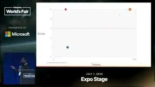
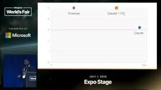

essencial do dia: A Postman mediu com PRs reais quanto um mapa de APIs ajuda o agente de código e o que acontece quando ele envelhece.
Um mapa de APIs para agentes em microsserviços
We Mapped 115 Microservices for Our Coding Agents
Em microsserviços, o agente de código só acerta se enxergar o mapa das APIs, e esse mapa precisa ficar atualizado.
Depois deste talk você consegue montar um eval pequeno com PRs antigos para medir se um mapa de APIs melhora o agente de código, contando nota e tokens
Em 3 frases
A Postman montou um grafo de contexto de API que liga serviços, endpoints, linhas de código e chamadas em produção, e deu esse grafo ao seu agente de código.
Ela mediu o efeito com evals (avaliações) criados a partir de PRs reais, comparando o agente com grafo, o Claude Code com busca simples e o Claude Code com o grafo como skill.
O grafo ganhou em descoberta de API, redesenho e análise de impacto, mas falhou quando ficou desatualizado, e o palestrante trata a atualização como parte central do trabalho.
Antes de ler
- Sistema distribuído Distributed system
- Grafo de contexto de API API context graph
- Contexto do agente informação disponível ao agente a cada tarefa analogia no glossário
- Telemetria de produção traces e métricas coletados do sistema em uso
- Eval avaliação analogia no glossário
- Pull request pedido de integração de código analogia no glossário
APIs formam a camada de contexto de um sistema distribuído
Cada microsserviço cuida de uma responsabilidade e a API define essa responsabilidade. As chamadas entre serviços revelam os fluxos de usuário que cruzam o sistema. Dentro de um único repositório o agente vai bem. Com centenas de repositórios, falta a ele essa visão de conjunto, e docs, skills e memória individual não a suprem.
04:01 A tese central: a API define a responsabilidade de cada serviço.
Todo dado do grafo precisa de lastro em código ou telemetria
O grafo cataloga serviços, endpoints, a linha de código de cada implementação, chamadas entre serviços e o caminho dos dados até bancos e caches. A regra do time é que cada ponto aponte para uma verdade concreta: uma linha de código ou um trace de telemetria de produção. O LLM indexa tudo, mas não inventa relações.
 (ampliar imagem)
(ampliar imagem)
Evals saem de PRs reais e decisões de design já tomadas
O time pegou PRs reais, registrou a intenção do desenvolvedor e o resultado final, e usou decisões de design documentadas como gabarito. Comparou três configurações: o agente da Postman com o grafo, o Claude Code com busca de código no GitHub e o Claude Code com o grafo como skill. Cada eval recebe nota de 0 a 5, e o gráfico cruza nota com tokens gastos.


(ampliar imagem)Mais 2 ideias deste talk
O ganho maior apareceu em redesenho e análise de impacto
Em descoberta de API, a diferença para o Claude Code foi pequena, mas o grafo superou a busca simples. No redesenho, o agente com grafo identificou os formatos de entrada usados por cada consumidor de uma API, enquanto a busca simples foi mal e o Claude com skill desistiu cedo. Na análise de impacto, a qualidade subiu e o gasto de tokens caiu para cerca de metade ou um terço da busca de código.


(ampliar imagem)Grafo desatualizado derruba a nota e a confiança
Em um eval de impacto de um PR, o resultado se inverteu: nota baixa e muito consumo de tokens. A causa foi que surgiram novos consumidores entre a escrita do eval e a execução. Para o palestrante, atraso na sincronização gera lacunas, as lacunas fazem o desenvolvedor perder a confiança e ele deixa de usar. Remoções de APIs e dependências também precisam ser detectadas.

O talk é também uma apresentação de produto: o final cita acesso antecipado e o estande da Postman. Os evals são internos, sem número de casos, sem notas exatas e sem repetições, então não dá para medir a margem dos ganhos. Os gráficos mostram tendências, não valores. O Claude Code serve de comparação, mas a configuração dele não é detalhada. A falha por dados defasados mostra o custo de manutenção, que não aparece quantificado. A cifra de 75% dos PRs vem do top 10 de repositórios, não do total.
Teste você mesmo
Responda de cabeça antes de abrir. Lembrar com esforço é o que fixa.
- lembrar Que regra a Postman impõe a cada dado do grafo de contexto de API?
Ver resposta
Cada ponto precisa apontar para uma verdade concreta, que é uma linha de código ou um trace de telemetria de produção. O LLM indexa tudo, mas o dado precisa ter lastro.
- aplicar Como você mediria se dar mais contexto ao seu agente de código compensa?
Ver resposta
Montar um eval com PRs antigos, guardar o resultado real como gabarito e rodar o agente com e sem o contexto extra. Medir nota e consumo de tokens juntos, porque um contexto que dobra o custo muda a conta.
- criticar Que lacunas enfraquecem os resultados mostrados nos gráficos do talk?
Ver resposta
Os evals são internos, sem número de casos, notas exatas ou repetições, e os gráficos mostram tendências. O Claude Code usado como comparação não tem a configuração detalhada. O custo de manter o grafo atualizado não é quantificado.
Eval de PRs antigos com e sem contexto extra
Você precisa de: Um repositório com PRs antigos, um agente de código e uma planilha
- Escolha três PRs antigos pequenos e escreva a tarefa de cada um como um pedido ao agente.
- Guarde o diff real de cada PR como gabarito.
- Rode o agente sem contexto extra e depois com um arquivo que descreve os serviços e APIs relevantes.
- Dê nota de 0 a 5 a cada resultado e anote os tokens gastos na planilha.
Deu certo se: Você tem uma tabela com nota e tokens das duas condições para os três PRs e sabe dizer se o contexto extra valeu o custo.
O que fazer com isso
- Liste os serviços e APIs da sua empresa que o agente de código precisa conhecer e veja se existe um mapa atualizado disso, mesmo que seja uma planilha.
- Monte um eval pequeno com PRs antigos: descreva a tarefa, guarde o resultado real como gabarito e rode seu agente com e sem contexto extra.
- Meça nota e consumo de tokens juntos. Um contexto que melhora a nota mas dobra o custo muda a conta.
- Se mantiver documentação ou grafo para agentes, defina como ele se atualiza a cada mudança e como remoções são detectadas.
Conversa com outros talks
- Aprendizado compartilhado entre agentes, além da memória · 5 out · em comum: Persistent memory, RAG
- Agentes de longo horizonte que tocam o negócio · 25 out · em comum: Eval, Persistent memory
- Contexto e checagem para o agente que começa do zero · 30 out · em comum: Contexto do agente, Pull request